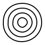

2.8 Higher order - funktiot
Nämä funktiot vaativat käyttöön Intermediate Student Language tai Advanced Student Language:n.
Jotta saat nämä funktiot käyttöösi vaihda kieleksi ISL tai ASL DrRacket:issa: Language->Choose language->Teaching languages->Intermediate/Advanced student. WeScheme:ssä funktiot toimivat automaattisesti.
procedure
(map f l ...) → lista<Z>
f : (X ... -> Z) l : lista<X>
> (map add1 (list 3 -4 1/2)) '(4 -3 1.5)
> (map sub1 (list 3 -4 1/2)) '(2 -5 -0.5)
> ellipsit (list

)
> (map (lambda (x) (rotate 45 x)) ellipsit) (list

)
procedure
(filter p? l) → lista<X>
p? : (X -> totuusarvo) l : lista<X>
> (filter odd? (list 0 1 2 3 4 5 6 7 8 9)) '(1 3 5 7 9)
> raja-arvo 3
> (filter (lambda (x) (>= x raja-arvo)) '(0 1 2 3 4 5 6 7 8 9)) '(3 4 5 6 7 8 9)
procedure
(foldr f pohja l ...) → Y
f : (X ... Y -> Y) pohja : Y l : lista<X>
> (foldr + 0 (list 0 1 2 3 4 5 6 7 8 9)) 45
> ellipsit (list

)
> (foldr above empty-image ellipsit)
> (foldr (lambda (r kuva) (overlay (circle r "outline" "black") kuva)) empty-image (list 5 10 15 20)) 
procedure
(foldl f pohja l) → Y
f : (X Y -> Y) pohja : Y l : lista<X>
procedure
(build-list n f) → lista<X>
n : luonnollinen-luku f : (luonnollinen-luku -> X)
(build-list n f) = (list (f 0) ... (f (- n 1)))
> (build-list 22 add1) '(1 2 3 4 5 6 7 8 9 10 11 12 13 14 15 16 17 18 19 20 21 22)
> i 3
> (build-list 3 (lambda (j) (+ j i))) '(3 4 5)
> (build-list 10 (lambda (r)(star (+ 5 r) "outline" "blue"))) (list

)
procedure
(andmap p? [l]) → totuusarvo
p? : (X ... -> totuusarvo) l : lista<X> = ...
> (andmap odd? (list 1 3 5 7 9)) #true
> (andmap positive? (list 2 3 -2 1 0)) #false
> raja-arvo 3
> (andmap (lambda (x) (< x raja-arvo)) (list 0 1 2)) #true
procedure
(ormap p? l) → totuusarvo
p? : (X -> totuusarvo) l : lista<X>
> (ormap odd? (list 1 3 5 7 9)) #true
> raja-arvo 3
> (ormap positive? (list 2 3 -2 1 0)) #true
> (ormap (lambda (x) (< x raja-arvo)) (list 6 7 8 1 5)) #true
procedure
(quicksort l vertailu) → lista<X>
l : lista<X> vertailu : (X X -> totuusarvo)
procedure
(sort l vertailu) → lista<X>
l : lista<X> vertailu : (X X -> totuusarvo)
procedure
(apply f l) → Y
f : (X-1 ... X-N -> Y) l : (lista X-1 ... X-N)
procedure
(argmin f l) → X
f : (X -> reaaliluku) l : lista<X>
procedure
(argmax f l) → X
f : (X -> reaaliluku) l : lista<X>